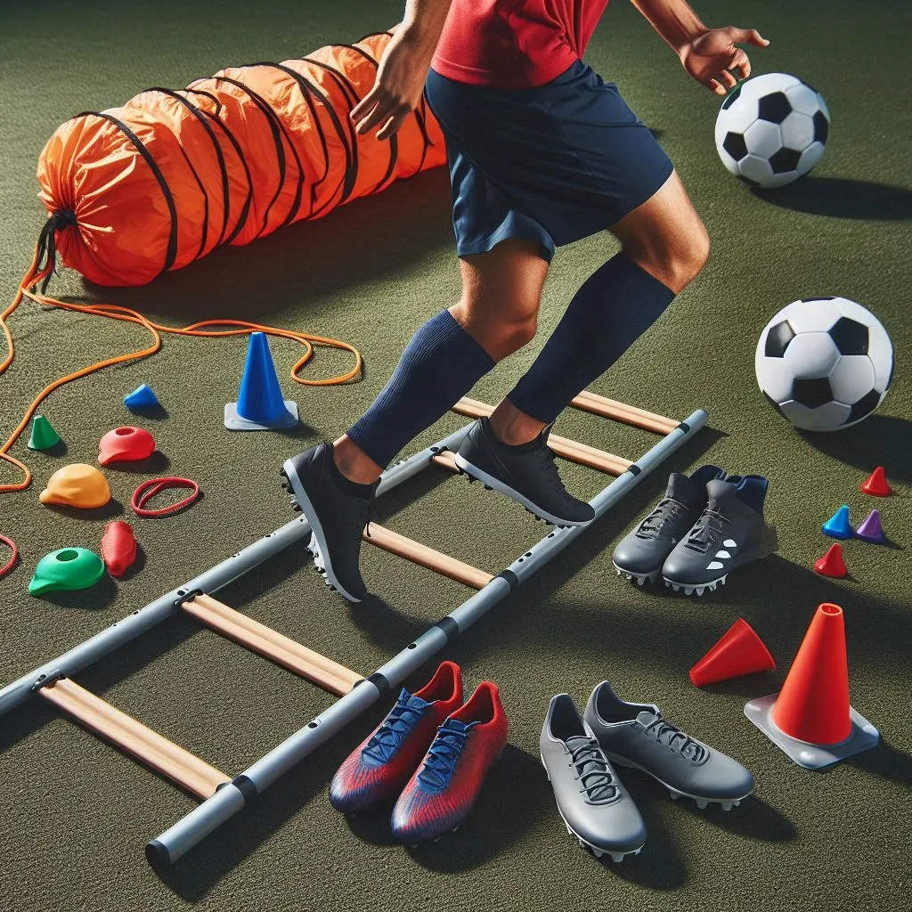

Speed and Agility Training for Soccer: Boosting Your Game with Targeted Workouts
Speed and agility are two of the most important skills a soccer player can develop. Whether you’re a forward looking to outpace defenders, a midfielder trying to weave through traffic, or a goalkeeper needing quick reflexes, speed and agility training for soccer will enhance your overall game. Incorporating specific drills and exercises into your training regimen can improve your footwork, reaction time, and overall fitness. In this post, we’ll explore effective speed and agility training techniques, explain their benefits, and show you how to maximize your soccer performance with targeted workouts.
- 1. Importance of Speed and Agility in Soccer
- 2. Effective Speed and Agility Drills for Soccer Players
- 3. Incorporating Speed and Agility Training into a Weekly Routine
- 4. Why Gloves Make an Ideal Gift for Soccer Players This Holiday Season
- 5. Tips for Maximizing Your Speed and Agility Gains
- Conlusion
1. Importance of Speed and Agility in Soccer
Speed and agility are key components of a successful soccer player’s skillset. These attributes allow athletes to move quickly, change direction efficiently, and react to opponents in real-time. Below, we’ll dive into the importance of these skills and how they impact performance on the soccer field.
Enhancing Game Performance
In soccer, players often cover significant ground and perform fast-paced movements in a variety of directions. Speed and agility training for soccer helps players increase their sprint speed, improve lateral movement, and become more nimble. This kind of training enhances a player’s ability to evade defenders, make quick turns, and position themselves effectively during the game.
Boosting Reaction Times
Agility training drills sharpen a player’s ability to react quickly to a constantly changing environment. For instance, defenders need to respond immediately to an opponent’s movements, while goalkeepers must react within seconds to block a shot. This is where agility training becomes a critical asset in enhancing reflexes and decision-making on the field.
2. Effective Speed and Agility Drills for Soccer Players
To improve speed and agility, soccer players must engage in targeted drills that mimic the types of movements they perform during a game. These drills focus on developing quick footwork, explosive power, and dynamic movement.
Cone Drills for Directional Movement
Cone drills are essential for training a player’s ability to change direction quickly. By setting up cones in various patterns, players can practice short bursts of speed and tight turns, both of which are crucial for avoiding defenders and maintaining control of the ball.
How to Perform:
- Set up cones in a zig-zag or “T” formation.
- Sprint from one cone to the next, making sharp cuts around each cone.
- Repeat several times, increasing speed with each attempt.
Ladder Drills for Footwork and Coordination
Ladder drills are fantastic for building fast footwork and enhancing coordination. These drills force players to focus on quick, precise movements that mimic the small, fast adjustments made during soccer matches.
How to Perform:
- Place an agility ladder on the ground.
- Step in and out of the rungs using a variety of foot patterns (e.g., one foot per square, two feet in and out).
- Perform the drills at high speed while maintaining control of your movements.
For additional agility workout ideas that complement soccer training, check out our speed agility workout guide, which covers drills that build explosive power and sharp movements.
Plyometric Exercises for Explosiveness
Plyometric exercises focus on building explosive strength in the legs, which is essential for sprinting, jumping, and quickly changing direction on the field. Box jumps, squat jumps, and broad jumps are examples of plyometric exercises that can significantly improve a player’s performance.
How to Perform Box Jumps:
- Stand in front of a sturdy box or platform.
- Jump explosively onto the box, landing softly.
- Step down and repeat, focusing on both height and control.
3. Incorporating Speed and Agility Training into a Weekly Routine
Consistency is key when it comes to speed and agility training for soccer. Here’s how to integrate these workouts into your weekly routine for optimal results.
Three Times a Week for Maximum Impact
Aim to dedicate three sessions per week to speed and agility exercises. This frequency allows your muscles to adapt and improve without overtraining. Start each session with a proper warm-up to reduce the risk of injury, and ensure you focus on different drills to work various muscle groups.
Combine with Strength and Conditioning
To maximize your speed and agility gains, it’s important to combine agility drills with strength and conditioning exercises. Plyometrics, resistance training, and core work all play a vital role in supporting fast, controlled movements.
4. Why Gloves Make an Ideal Gift for Soccer Players This Holiday Season
As the holiday season approaches, soccer gear makes for a practical and thoughtful gift. Among the various soccer accessories, gloves are a versatile and useful option for players of all positions, particularly during cold-weather training sessions. For goalkeepers, high-quality gloves of footbal offer the necessary grip and protection needed to defend the goal.
Consider pairing your soccer gear gifts with top fitness accessories, such as an agility ladder or training cones, to create the perfect holiday top gift sets for 2024. For men passionate about soccer, practical gear like gloves, cleats, or a soccer ball make thoughtful gifts for men that will enhance their performance on the field.

5. Tips for Maximizing Your Speed and Agility Gains
Even if you’re dedicated to speed and agility training for soccer, there are additional steps you can take to ensure you get the most out of your workouts.
Focus on Proper Form
When performing agility drills, focus on good posture and alignment. Keeping your core engaged and maintaining balance will improve your performance and help prevent injuries.
Recover Properly
Recovery is crucial for muscle growth and injury prevention. Ensure you’re incorporating rest days into your training schedule and doing post-workout stretching or foam rolling to maintain muscle health.
Use the Right Equipment
Using proper equipment, like agility ladders, cones, and soccer-specific shoes, ensures you’re training in a way that directly translates to game-day performance. Don’t underestimate the importance of having the right gear for maximum efficiency.
Conlusion
By incorporating speed and agility training for soccer into your weekly workouts, you’ll notice significant improvements in your performance on the field. These drills not only make you faster and more agile but also enhance your overall endurance and strength. Whether you’re shopping for a soccer enthusiast this holiday season or looking to up your game, speed training and the right gear (like gloves) can make a world of difference. And for more advanced speed drills, be sure to check out our guide on speed agility workout for additional training tips!
Frequently Asked Questions
What is speed and agility training for soccer?
Speed and agility training for soccer involves drills and exercises that improve a player’s ability to run quickly, change direction efficiently, and react to game situations. These exercises help players develop the physical skills necessary for high-level soccer performance.
How often should soccer players engage in speed and agility training?
Players should aim to incorporate speed and agility drills into their training routine 2-3 times per week. This frequency helps maintain optimal performance without overloading the muscles.
Can goalkeepers benefit from speed and agility training?
Yes! Goalkeepers need to be quick and agile to make saves, block shots, and react to changes in the game. Agility drills help goalkeepers improve their reflexes and positioning.
What equipment do I need for speed and agility training?
The basic equipment for speed and agility training includes agility ladders, cones, resistance bands, and soccer cleats. Having these tools allows players to simulate game-like conditions in their training.
Are gloves a good gift for soccer players?
Absolutely! Gloves, especially for goalkeepers, are a practical and thoughtful gift. Even field players can benefit from gloves for cold-weather training. Plus, they make a great addition to soccer gift sets during the holiday season.